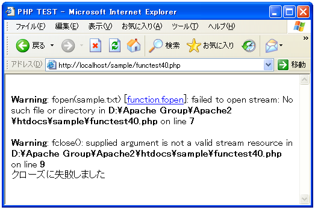
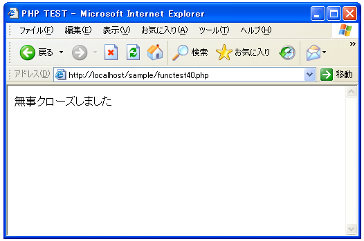

ファイルのオープンとクローズ(fopen, fclose)
ファイルを開く方法と閉じる方法です。ファイルはPHPシステムと同じローカルシステム上にあり、開こうとしているファイルのパーミッションが適切に設定されている必要があります。
まずファイルをオープンする方法です。
fopen resource fopen(string filename, string mode)
引数に指定したファイルを、指定したモードで開きます。 引数： filename 対象のファイル名 mode 開くモード(後述) 返り値： ファイルを表すハンドル
引数で指定したファイルを、指定したモードで開きます。指定可能なモードは下記の通りです。
| モード | 読み書き区分 | 動作 |
|---|---|---|
| r | 読み | ファイルポインタをファイルの先頭に置きます。 |
| r+ | 読み/書き | ファイルポインタをファイルの先頭に置きます。 |
| w | 書き | ファイルポインタをファイルの先頭に置き、ファイルサイズをゼロにします。ファイルが存在しない場合には、作成を試みます。 |
| w+ | 読み/書き | ファイルポインタをファイルの先頭に置き、ファイルサイズをゼロにします。ファイルが存在しない場合には、作成を試みます。 |
| a | 書き | ファイルポインタをファイルの終端に置きます。ファイルが存在しない場合には、作成を試みます。 |
| a+ | 読み/書き | ファイルポインタをファイルの終端に置きます。ファイルが存在しない場合には、作成を試みます。 |
| x | 書き | ファイルポインタをファイルの先頭に置きます。ファイルが既に存在する場合にはfopen()は失敗し、E_WARNINGレベルのエラーを発行します。ファイルが存在しない場合には新規作成を試みます。 |
| x+ | 読み/書き | ファイルポインタをファイルの先頭に置きます。ファイルが既に存在する場合にはfopen()は失敗し、E_WARNINGレベルのエラーを発行します。ファイルが存在しない場合には新規作成を試みます。 |
※Windowsの場合、バイナリモードで開く場合には「b」を追加する必要があります。例えばモードに「w」を指定したい場合で、バイナリモードで開く場合には「wb」となります。
ファイルを開く目的(読み込むためか、書き込むためか、両方か)と、挙動を考慮してモードを指定します。ファイルポインタとはファイルの中で読み込みや書き込みを行う位置を表します。ファイルポイントが先頭で読み込みを開始すればファイルの先頭から読み込みを行う事になりますし、先頭から書き込みを行うというのは既にファイルに何か書いてあっても既存の内容を破棄してファイルの先頭から書き込みを行うことを意味します。また、ファイルポイントが最後というのは既存の内容の最後に追加として書き込みを行うことを意味しています。
次にファイルをクローズする方法です。
fclose bool fclose(resource handle)
handleが指しているファイルがクローズされます。 引数： handle 対象となるハンドル 返り値： 成功した場合に TRUE を、失敗した場合に FALSE
実際の流れとしては下記のようになります。
$fp = fopen('filename', 'mode');
// ファイルに対する操作を行う
fclose($fp);
サンプルプログラム
では実際に試して見ます。
<html>
<head><title>PHP TEST</title></head>
<body>
<?php
$fp = fopen('sample.txt', 'r');
$flag = fclose($fp);
if ($flag){
print('無事クローズしました');
}else{
print('クローズに失敗しました');
}
?>
</body>
</html>
上記では、まず「sample.txt」を設置せずに上記ファイルをWWWサーバに設置しブラウザ経由で見ると下記のように表示されます。

次に、このプログラムと同じディレクトリ内に「sample.txt」という適当なファイルを置いてから実行すると下記のように表示されます。

( Written by Tatsuo Ikura )

著者 / TATSUO IKURA
初心者～中級者の方を対象としたプログラミング方法や開発環境の構築の解説を行うサイトの運営を行っています。